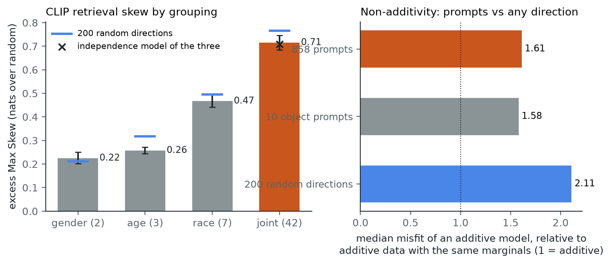
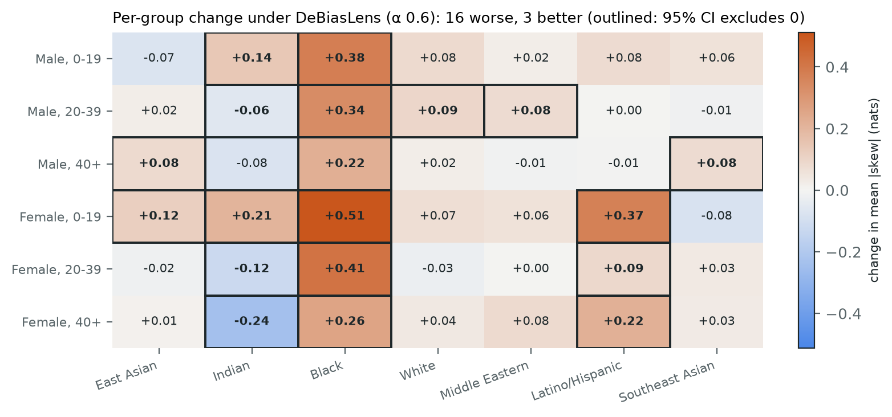
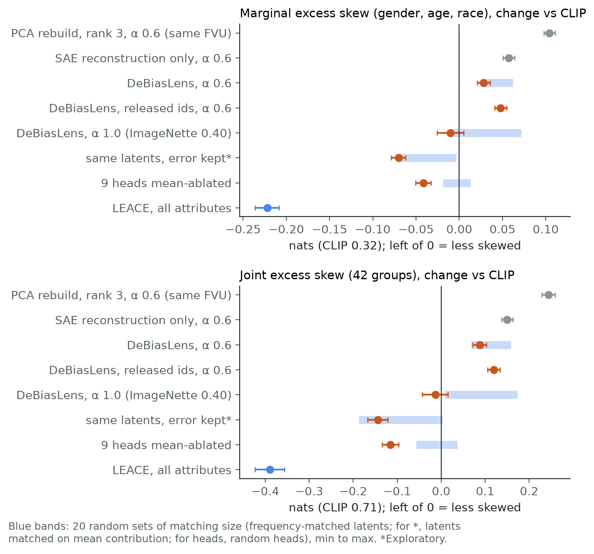
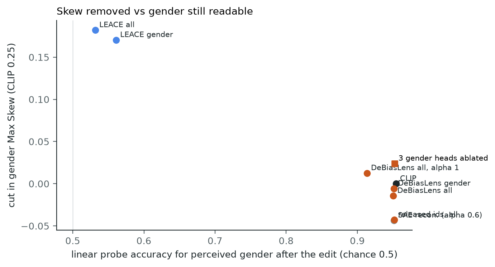

← Research·Experiments·
Do SAE features capture intersectional bias in vision-language models?
An open replication and extension of DeBiasLens on its released CLIP checkpoint. CLIP's face search is skewed across the 42 combinations of perceived gender, age and race, but almost all of that is the three attributes compounding. The SAE has a feature for 1 of the 42 combinations, and in this setup the published edit raises skew rather than lowering it.
00Try it: one search, four versions
Search 10,954 face photos for "a nurse" and keep the top 1,000. The grid shows which of 42 groups come back more (orange) or less (blue) than their share of the pool. Now switch the edit on. Does the search get fairer?
Version of CLIP
Hover or tap a cell for its group and value.
For "nurse", the published edit raises the joint excess skew (defined in the method) from 1.046 to 1.211. The SAE rebuild with nothing switched off raises it too, to 1.165. Removing the same features while keeping the rest of the vector flattens the grid (mean |skew| 1.418 to 0.864), though this occupation's joint excess still edges up (1.085). One prompt is one example. The averages over all 858 prompts, with intervals, are in the findings. Each cell is the mean over the occupation's 7 phrasings, computed by make_hook_data.py from results/.
The short answer
- The skew is real but mostly compounding. Joint skew over the 42 groups is 0.715 nats above chance. A model that only combines each prompt's separate gender, age and race skews predicts 0.708.
- The SAE has hardly any features for the combinations. The paper's selection rule finds one for 1 of 42 groups at its threshold.
- In this setup the published edit raises skew, by 0.088 [0.072, 0.103]. It blends in a rebuild of the class token that loses 86% of its variance, and a non-SAE rebuild with the same loss raises skew more.
- The features do carry some gender and race signal. Removed without the rebuild, they cut gender skew more than all 20 random feature sets matched on contribution, and race skew more than 19 of them (exploratory).
- In LLaVA-1.5-7B the released edit never reaches the language model. Naming the gender in words gives a gender gap 2.0× [1.83, 2.64] the photo's.
01Why it matters
A search can look balanced by gender and balanced by race, yet still bury one combination, such as older women of one race. Fairness research calls a fix that checks only the separate attributes "gerrymandering". Vision-language models now sit behind image search and assistants, so it matters whether a debiasing method reaches the combinations or only the separate attributes.
"Interpretable Debiasing of Vision-Language Models for Social Fairness" (DeBiasLens, CVPR 2026) offers an appealing route. It trains a sparse autoencoder on a vision encoder without any labels, uses face labels only to pick one feature per group, and switches those features off. The paper reports lower skew in CLIP and a smaller gender gap in LLaVA-1.5 and InternVL2, includes a random-feature comparison, and names intersectional bias as a next step. It also released its checkpoints and code, which made this study possible. This note takes up that next step on the released ViT-L/14-336 checkpoint, and adds the controls a feature edit needs.
02The method in plain words
We type a prompt, rank 10,954 labelled face photos by CLIP similarity, keep the top 1,000, and count how many come from each group. Then we change CLIP's image embedding in one of several ways and count again. We edit one vector: the class token, which CLIP uses to summarise each image, at the output of its last block. Only that vector reaches the image embedding, so editing it there is exact.
Step 3, the versions compared:
0.4 h + 0.6 rebuildh − Σ aj djEvery edit is also run with 20 random feature sets of the same size. LEACE, a closed-form linear erasure, is the strong baseline.
A sparse autoencoder (SAE) rewrites the class token as a short list of switched-on features: 8,192 to choose from, about 20 on at a time, each with a fixed direction. Think of a paint mixer that rebuilds any colour from a few named tubes. DeBiasLens finds the tubes that seem to mean "woman", "age 20-29" or "Black", turns them off, and remixes. A feature is picked for a group if it fires on at least 90% of that group's training photos (τ = 0.9) and on fewer than 90% of every other group's; among the candidates, the most active wins. Where no feature passes, the threshold steps down, as the plan fixed in advance. That gave 13 features. The remix is then blended with the original: 40% original, 60% rebuild, the paper's default (α = 0.6).
Three terms are used throughout.
- Skew of a group is the log of its share of the top 1,000 over its share of the pool. 0 is fair; log 2 ≈ 0.69 means twice its share. Units are nats.
- Excess skew is the largest group skew minus what a random top 1,000 scores. The largest of 42 small groups is large by chance alone, so we subtract that.
- Joint skew is measured over the 42 groups of gender (2) × age (3 bins) × race (7 labels). Marginal skew is the mean over gender, age and race taken one at a time.
FairFace labels are annotators' perceptions in fixed categories. Every number here is a statistic over groups of photos, never a claim about a person.
03First: can the measurement see what we know is there?
Before trusting any edit, we checked the ruler on cases where we already know the answer.
Does our metric reproduce the paper's plain-CLIP numbers?
mostly Gender Max Skew × 100 on the four prompt sets is 22.3 / 33.4 / 23.3 / 33.7, against the paper's 19.9 / 31.5 / 23.2 / 30.0. Three of four are within the 0.03 bar set in advance; the 25-prompt stereotype set is 0.037 off.
If we really remove gender, does the metric drop?
yes LEACE on gender takes a linear probe for gender from 0.95 accuracy to 0.56, near chance, and cuts gender Max Skew by 0.170. A real removal shows up.
What does the metric read on queries with no social content?
a lot 200 random directions used as queries score a joint excess of 0.765, more than the 858 real prompts (0.715). Ten object prompts such as "a photo of a golf ball" score 0.30 to 0.88. Faces sit in clusters by perceived gender, age and race, so any query retrieves them unevenly.
The last check shapes how to read everything below. A single skew number mixes what a prompt adds with how the faces are laid out. So we read edits only as paired differences: the same prompts and photos with and without the edit, where the layout cancels. The random-query check was added after an independent review, so it is exploratory.
04What we found
1 · The joint skew is the three attributes compounding
Joint excess skew is 0.715 [0.685, 0.746] nats, above race (0.467), age (0.257) and gender (0.225). So the combinations are more skewed than any single attribute. But is that skew specific to the combinations? If a prompt over-retrieves men and over-retrieves people aged 20-39, it should over-retrieve men aged 20-39 by roughly the product. An independence model built that way from each prompt's own gender, age and race counts predicts 0.708. The part left for the combinations is 0.007 [−0.006, 0.019] nats, an interval that includes zero.

2 · The published edit raises skew, because the rebuild is lossy
At the paper's setting, switching off the 13 features leaves the paper's metric level with plain CLIP (0.640 against 0.636) and raises joint excess by 0.088 [0.072, 0.103]. The rebuild alone, with nothing switched off, raises it by 0.150. So switching features off does help, relative to the rebuild, but the blend with the rebuild hurts more.
Why does the rebuild hurt? On the class token, the SAE's rebuild leaves 86% of the variance unexplained (FVU 0.861), against 19% on block-23 tokens in general. It was trained on two random tokens per image, almost all of them image patches. A rebuild that has nothing to do with the SAE supports this reading: the top 3 principal components lose as much (FVU 0.87), and blended the same way they raise joint excess by 0.244 [0.229, 0.259]. A lossy rebuild keeps the coarse layout of the faces, where the demographic clusters are, and drops the detail that lets prompts tell faces apart.
| Edit | Paper metric | Joint excess | ImageNette |
|---|---|---|---|
| CLIP, no edit | 0.636 | 0.715 | 0.998 |
| PCA rebuild of equal loss, α 0.6* | 0.750 | 0.959 | 0.995 |
| SAE rebuild only, α 0.6 | 0.678 | 0.865 | 0.993 |
| DeBiasLens, 13 selected features, α 0.6 | 0.640 | 0.803 | 0.992 |
| DeBiasLens, released feature ids, α 0.6 | 0.665 | 0.835 | 0.993 |
| 20 random feature sets, α 0.6 (range) | – | 0.782–0.873 | 0.992–0.995 |
| DeBiasLens, 13 selected features, α 1.0 | 0.567 | 0.702 | 0.400 |
| Same 13 features removed, error kept* | 0.563 | 0.571 | 0.998 |
| LEACE, gender + age + race | 0.367 | 0.325 | 0.998 |
* Exploratory, added after the registered results. Version A's Table 1 also gives gender, marginal and probe columns.
Raising α to 1.0 does lower skew a little (paper metric −0.069 [−0.083, −0.055]). But then the whole class token is the rebuild, and ImageNette accuracy falls from 0.998 to 0.40 (Figure 2).

Per group (Figure 3), the edit makes 16 of 42 groups worse and 3 better. The rebuild alone makes 30 worse, and so does a random feature set (31). The groups hurt most were already under-retrieved: groups labelled Black, in every age band.

The paper reports image-side gender Max Skew on occupations falling from 31.5 to 20.4. With the released checkpoint we measure 33.4 for CLIP and 32.9 with the selected gender features off, so we could not reproduce the reduction. Our plain-CLIP numbers match the paper's within 0.04 on every prompt set, so the difference lies in the edit, and the rebuild gap above is the most direct explanation. The paper's strongest numbers are on ViT-B/16 and use a text-side SAE, which we did not test.
3 · Without the rebuild, the features cut gender and race skew (exploratory)
To separate the features from the rebuild, we subtracted only the 13 features' contribution and kept everything else, including the SAE's error. Gender Max Skew falls from 0.247 to 0.185 and race from 0.571 to 0.453. Joint excess falls by 0.144 [0.121, 0.167], and ImageNette stays at 0.998. We added this test after reading the registered results.
Is that the features, or just removing a large piece of the vector? The 13 features are among the most active on the class token, so we compared them with 20 random sets matched on each feature's mean contribution. The gender cut still beats all 20, and the race cut beats 19. But 6 of the 20 cut joint excess more. So the features carry specific gender and race signal, while most of the joint cut comes from removing that much of the vector (Figure 4).

4 · The SAE has almost no features for the combinations
We ran the paper's selection rule on the 42 joint groups. At τ = 0.9 it finds a feature for 1 group (Table 2). Lowering τ finds more, but of the 52 features found at any τ, only 2 are mostly about the combination rather than one attribute. Most are one attribute in disguise: the feature picked for women aged 20-39 labelled Black fires on 62% of all photos labelled Black.
| τ | Groups with a feature | Features found | Share mostly interaction (≥ 0.5) |
|---|---|---|---|
| 0.9 | 1 | 1 | 0.00 |
| 0.7 | 4 | 4 | 0.00 |
| 0.5 | 6 | 7 | 0.00 |
| 0.3 | 8 | 9 | 0.00 |
| 0.1 | 20 | 31 | 0.06 |
The released SAE is a Matryoshka SAE. Its features come in nested levels (the first 512, then 1,024, 2,048 and 4,608 more), trained so the first level alone gives a rough picture. One might expect coarse levels to hold attributes and fine levels their combinations. The direction holds, but weakly. Fine features have a larger interaction share (median 0.38 against 0.29; difference 0.088 [0.049, 0.113]), and every feature the paper's rule picked sits in levels 1-2 and is mostly additive (Figure 5).

5 · Other handles inside CLIP do better than generic features
We tried three other ways in. The first two beat their random controls.
- Prompt-specific features. The similarity gap between groups splits exactly into one term per SAE feature. Switching off each prompt's top 13 contributors, in the same α 0.6 blend, cuts joint excess by 0.118 [0.094, 0.142] against CLIP and by 0.205 [0.183, 0.228] against DeBiasLens, with ImageNette at 0.994.
- Nine attention heads. Replacing the 3 heads that carry most of each attribute with their average output cuts joint excess by 0.115 [0.096, 0.135], beyond 20 random sets of 9 heads, with ImageNette at 0.996 (Figure 6).
- The text side. Projecting attribute directions out of each prompt's embedding cuts the paper metric from 0.636 to 0.514. Adding the image edit improves that metric slightly (0.493) but raises joint excess from 0.652 to 0.730.

LEACE on all three attributes is the strongest edit (joint −0.390, ImageNette 0.998). It is also the one that gerrymanders: it removes 70% of marginal excess but only 55% of joint excess. No feature edit, and not the heads, removes the attribute itself: a linear probe still reads perceived gender at 0.91 to 0.95 accuracy (Figure 7). One linear erasure does remove most of gender, which bears on the paper's view that no single linear direction separates an attribute.

6 · In LLaVA, the language model outweighs the photo
LLaVA-1.5-7B answered 40 yes/no questions (20 occupations, 10 traits, 10 skills) about each of 400 FairFace photos. A question's gender gap is the mean P(yes) on photos of women minus that on men; we report the mean absolute gap over the 40 questions. Shuffling the gender labels across photos gives the measure's noise floor.
- The released edit never reaches the language model. The released LLaVA wrapper edits vision block 23, but LLaVA-1.5 reads block 22. On 384 questions, the edit, and even replacing block 23's output with zeros, leave every answer probability unchanged.
- The photo's gender signal is small and erasable. Untouched, the gap is 0.033, against a floor of 0.021. LEACE gender erasure where LLaVA reads takes it to 0.024, near its floor. Accuracy on MME, a general benchmark, moves by −0.5 points [−0.9, −0.04].
- Words move it more. With a grey image and "The person in this image is a woman." (or "a man.") before the same questions, the gap is 0.066, 2.0× [1.83, 2.64] the photo's. It follows familiar stereotypes: "nurse" and "hairdresser" lean toward women, "carpenter" and "developer" toward men.

05What this does and doesn't show
It does show three things for the released ViT-L/14-336 FairFace checkpoint at its released attachment point. The edit's effect on retrieval is dominated by the rebuild, not by the features it names. This SAE spends almost none of its 8,192 features on demographic combinations. And CLIP's joint skew on FairFace leaves little beyond compounding for such features to capture.
It does not show that DeBiasLens fails in general.
- One model, one checkpoint. The paper's strongest numbers are on ViT-B/16 with a text-side SAE, which we did not test. We followed the released code for the checkpoint, attachment, blend and metric, but did not run the released pipeline end to end. A different checkpoint or feature list could give the paper's numbers.
- Perceived labels, one dataset. FairFace labels are annotators' judgements in fixed categories, with coarse age bins. Groups have 84 to 578 val photos, so small groups' skews are noisy; the intervals account for that.
- Retrieval is one use. Top-1,000 skew is one measure of representational harm. It says nothing about captioning, classification or generation.
- The skew metric carries the faces' layout. Absolute numbers mix prompt bias with how faces cluster in CLIP. Only paired comparisons between edits are free of it.
- Intervals cover one source at a time. Skew intervals resample prompt concepts with photos fixed; per-group intervals resample photos with prompts fixed.
- LLaVA on 40 questions. The gap's floor is about 0.02 on 400 photos, so smaller effects are out of reach.
- Some arms are exploratory. The error-kept removal, the LLaVA shuffle floor, the independence model, random queries, the PCA rebuild and the contribution-matched band were added after reading the results.
06Reuse it, and what to do next
Three checks for any SAE edit. Each is cheap, and each caught one problem here.
- Run the rebuild alone on the exact vector the edit touches, plus a non-SAE rebuild of equal loss.
- Check that the edited vector reaches the output. Here, LLaVA never read it.
- Score random queries with the bias metric before reading what it says about a prompt.
The code loads the released checkpoint directly. A minimal version of the three CLIP versions in this note:
import torch
from sae import SAE # experiments/sae-intersectional-bias/sae.py
from lib import sae_blend, codes_of, embed
sae = SAE.load() # released ViT-L/14-336 FairFace SAE (ae_100000.pt)
h = torch.as_tensor(...) # CLIP block-23 class token, [N, 1024]
social = ... # 13 feature ids: results/core.json["selection"]["chosen"]["all"]
edited = sae_blend(sae, h, zero=social, alpha=0.6) # the published edit
rebuilt = sae_blend(sae, h, zero=(), alpha=0.6) # control: the rebuild alone
f = codes_of(sae, h)
kept = h - f[:, social] @ sae.W_dec[social] # remove the features, keep the SAE error
image_embeddings = embed(edited) # then rank, keep the top K, count by groupEverything runs from reproduce.sh (--dry-run prints the commands). The CLIP pass over 101,233 images takes 87 minutes on one A10G; every CLIP analysis after it runs on a laptop in about 15 minutes. The LLaVA arms take 2.5 hours on one A100. The whole study cost $11.52 on Modal, pilots included, from Modal's billing report for the study's app (modal_billing.json: GPUs $7.66, CPU $1.74, memory $2.10, network $0.02). The in-code ledger, spend.jsonl, sums to $7.51 because it priced GPU time only.
Next steps.
- An SAE trained with the class token in its data, then the same audit, to test whether the rebuild gap is the whole story.
- For LLaVA, an SAE trained where it reads (block 22). Then the photo and the gender in words together, to see whether the image route adds to the language prior or is absorbed by it.
- Edits aimed at the joint groups directly: LEACE on the 42 groups, and prompt-specific attribution on joint rather than marginal gaps.
AAppendix: how it was run, data and references
Pre-registered. The plan, with 17 predictions and their thresholds, was committed before any code ran. A scorer committed before the full results were read marked 11 of 17 as hits. An independent code and statistics review found two bugs, which were fixed and rerun, and asked for the four exploratory checks above. Version A lists every step, what was fixed in advance against what changed, and each prediction's verdict.
Conditions. CLIP in fp32 without TF32; the SAE in fp32; LLaVA in fp16 with next-token probabilities at the answer letter, batch 32, no sampling. Intervals are 95% bootstraps with 10,000 resamples.
Data. Every number above comes from results/: core.json (selection, every named arm, random bands), robust.json (independence model, random queries, PCA rebuild, contribution-matched band), errkeep.json, a3.json and a4.json (combination features, Matryoshka levels), b1.json to b3.json (attribution, heads, text side), cells.json (per group) and llava_full_summary.json. Version A's appendix describes each file's keys.
References. "Interpretable Debiasing of Vision-Language Models for Social Fairness" (CVPR 2026, arXiv 2602.24014), its code and checkpoints; FairFace; CLIP ViT-L/14-336; LLaVA-1.5-7B; the VLA gender-bias benchmark prompts (vla-gender-bias); "LEACE: Perfect linear concept erasure in closed form" (NeurIPS 2023); "Interpreting CLIP's Image Representation via Text-Based Decomposition" (ICLR 2024); "Debiasing Vision-Language Models via Biased Prompts" (2023); MME; ImageNette.